System Configuration
For a new installation, configure hardware references in this order: Gateway Devices → Gate Access Devices → Gates → Cameras → Shopfloor Layout → Settings validation.
1. Gateway Device Management
Add one record for each SIG300 used by AI LOTO. Choose the role correctly:
- Gate Control — drives FlexLock and MB1 Sol and reads FlexLock AUX.
- Alarm — drives Green, Orange, Red, Fall and Mismatch outputs.
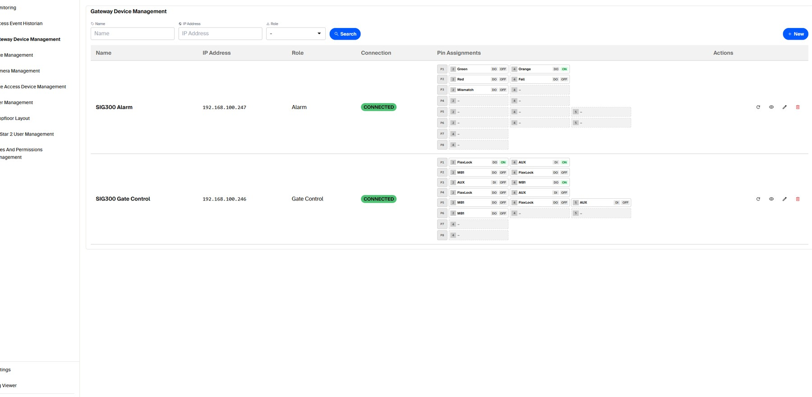
Add a Gateway
- Click New.
- Enter a friendly Name and the SIG300 IP Address.
- Select Gate Control or Alarm.
- For an Alarm gateway, map the logical alarm functions to the appropriate available pins.
- Save and wait for the gateway to initialize. Confirm the status becomes Connected.
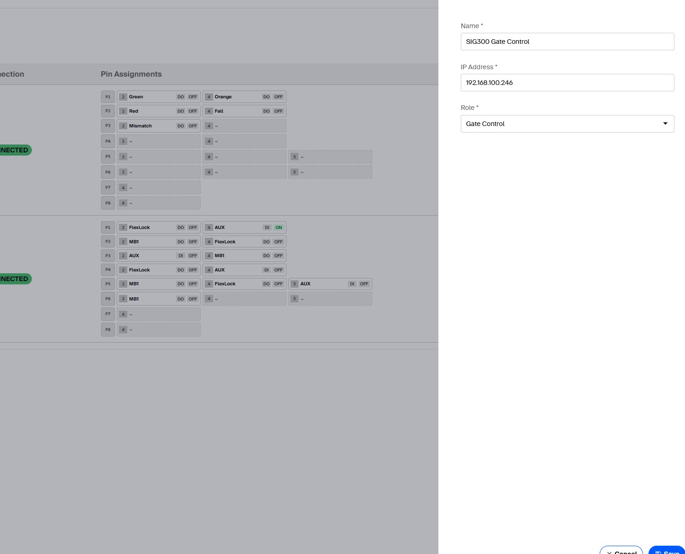
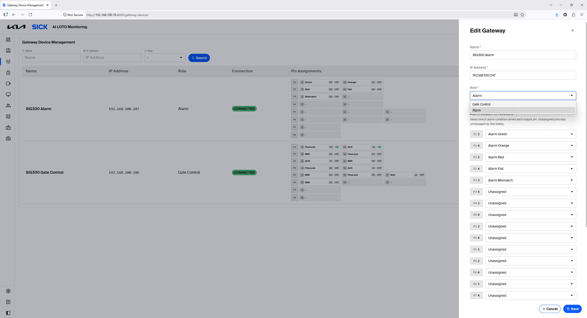
Supported SIG300 pins
| Port | Usable DIO pins in this application | Process-data field |
|---|---|---|
| P1–P4 | Pin 2, Pin 4 | Pin 2 = iqValue; Pin 4 = cqValue |
| P5–P6 | Pin 2, Pin 4, Pin 5 | Pin 2 = iqValue; Pin 4 = cqValue; Pin 5 = iq5Value |
| P7–P8 | Pin 4 | Pin 4 = cqValue |
The UI rejects unsupported port/pin combinations, function/direction mismatches and duplicate assignments. A physical pin can have one assignment only.
Pin function meanings
| Function | Direction | Purpose |
|---|---|---|
| Gate FlexLock Output | DO | Controls FlexLock lock/unlock signal. |
| Gate FlexLock AUX Input | DI | Physical feedback used by the gate state machine. |
| Gate MB1 Sol Output | DO | Controls MB1 Sol actuator output. |
| Alarm Green / Orange / Red / Fall / Mismatch | DO | Site Safety logical outputs on an Alarm gateway. |
| Unassigned | — | Not managed by Site Safety. |
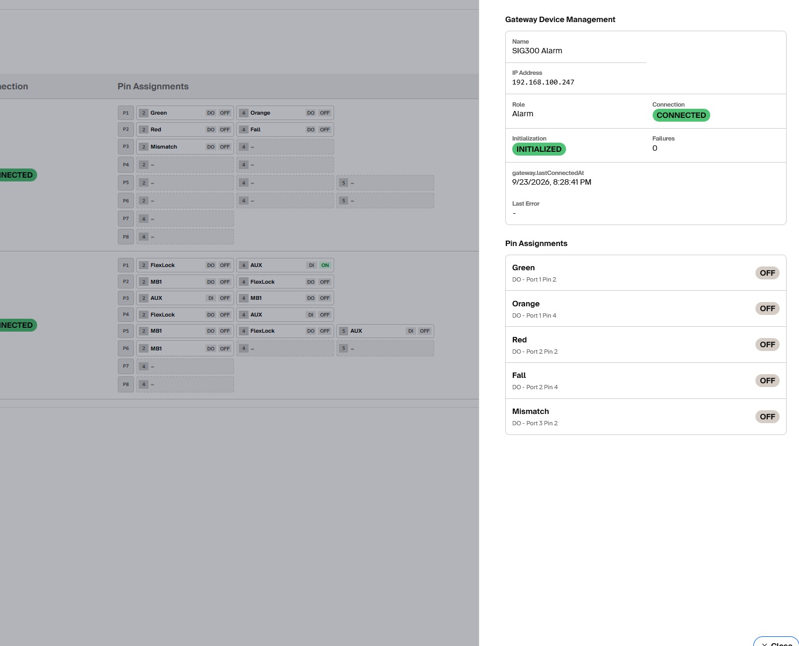
2. Gate Access Device Management
This page connects a physical Suprema/BioStar scanner to BioStar 2 and creates the local Access Device reference used by AI LOTO. For the normal commissioning workflow, enter the scanner's exact network address and use TCP Search. You do not need to manually type the BioStar Device ID or Device Type ID.
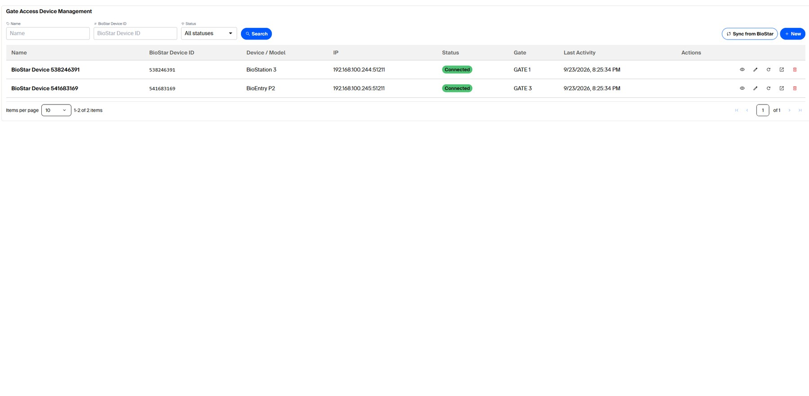
Before registering a scanner
- Use the IP address assigned to the physical scanner, not the BioStar server IP and not the LOTO server IP.
- The address must be unique. Do not reuse an IP already assigned to another scanner, camera, SIG300 or IPC.
- Use the approved site network plan. Configure the correct subnet mask and default gateway when routing between networks is required.
- For a stable industrial installation, use a fixed/static address or an approved DHCP reservation so the scanner does not unexpectedly receive a different IP later.
- Confirm the BioStar 2 server can reach the scanner's IP. If the server and scanner are on different VLANs/subnets, the required routing/firewall rules must already exist.
- For the standard Server → Device flow, the scanner's device communication port is normally 51211. If the port was intentionally changed on the scanner, enter that configured value instead.
Register a new BioStar scanner from LOTO
- Open Gate Access Device Management and click New.
- In Network / Connection, enter the scanner's exact IP Address.
- Confirm the Port. The default Suprema device port is 51211.
- Click TCP Search. LOTO asks BioStar 2 to search that exact IP/port.
- When a device is found, select it from the discovered-device result. LOTO fills the authoritative BioStar Device ID and available device metadata returned by BioStar.
- Review the BioStar Name. Keep or adjust the friendly name as needed.
- Under LOTO Integration, optionally select the Gate that uses this scanner. You may also leave No gate and assign it later from Gate Management.
- Keep Enabled selected for a device that should participate in normal access-event processing.
- Click Save. LOTO registers the detected device with BioStar 2 when required and then creates/updates its local Access Device reference.
- After saving, confirm the device appears in the table and reaches Connected. Then verify the correct Gate assignment.
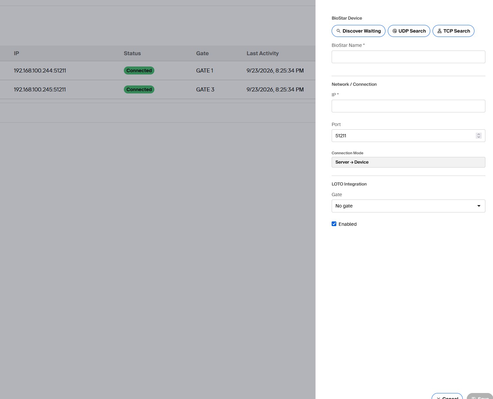
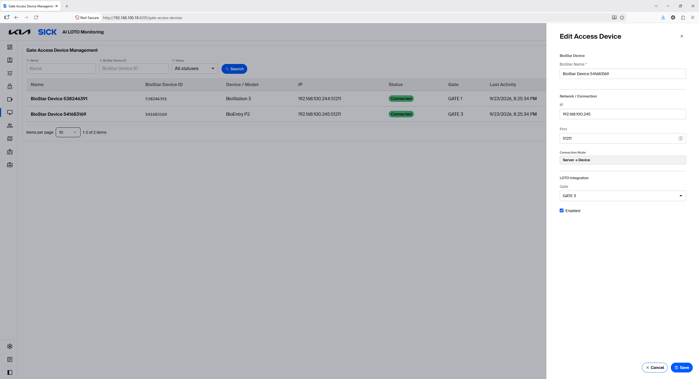
Connection mode
The standard direct IP/port workflow shown above uses Server → Device, which is also BioStar 2's default device-connection mode. In this mode, the BioStar server initiates the connection to the scanner's device port (normally 51211). If the installation intentionally uses Device → Server, configure that topology according to the site/BioStar device setup; such devices may first appear as waiting devices instead of being commissioned through the normal direct TCP-search flow.
Existing devices and synchronization
Sync from BioStar imports BioStar devices that already exist on the BioStar server and refreshes synchronized metadata for existing matches. Refresh from BioStar refreshes one device. Remove from LOTO removes only the local LOTO reference; it is blocked while the device is assigned to a Gate.
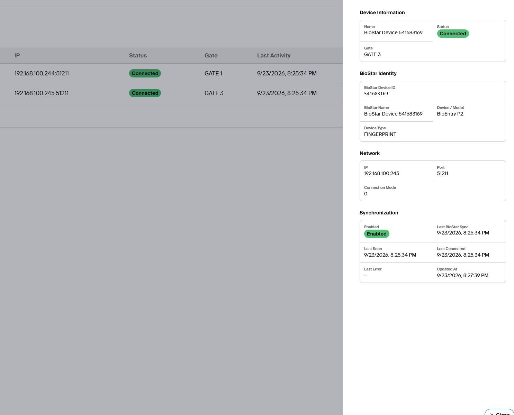
3. Gate Management
Each functional gate needs one Gate Control gateway, one BioStar Access Device and three physical I/O mappings.
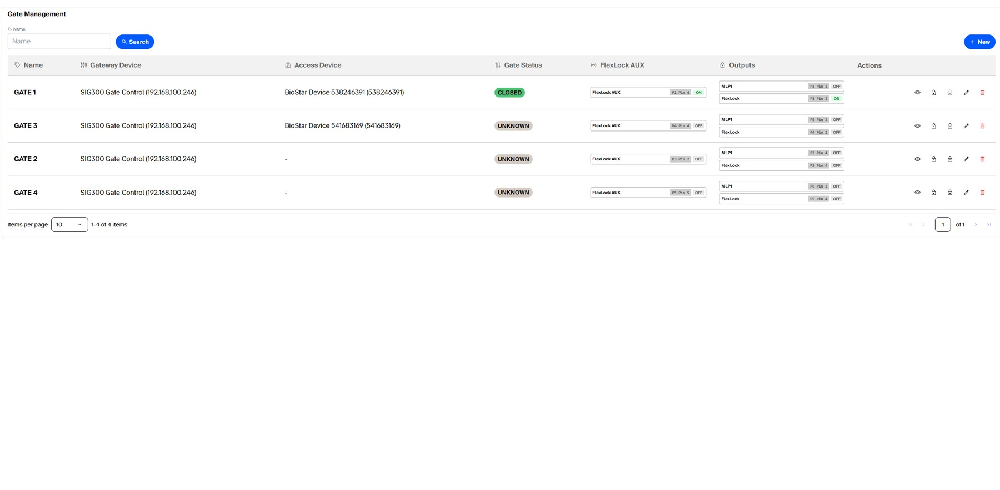
| Gate signal | Direction | Required behavior |
|---|---|---|
| FlexLock DO | DO | OFF during open preparation; ON to finish close/lock sequence. |
| FlexLock AUX | DI | Must become OFF before MB1 Sol is turned ON; must become ON before FlexLock is turned ON during close. |
| MB1 Sol DO | DO | ON to complete opening; OFF to begin closing. |
Create/edit a Gate
- Enter the Gate name.
- Select the Gate Control Gateway.
- Select the Gate Access Device. One local access device should be assigned to only one Gate.
- Choose Port/Pin for FlexLock DO and its Startup Safe State.
- Choose Port/Pin for FlexLock AUX. This is input-only.
- Choose Port/Pin for MB1 Sol DO and its Startup Safe State.
- Save, then open Details and confirm all runtime/pin states are sensible.
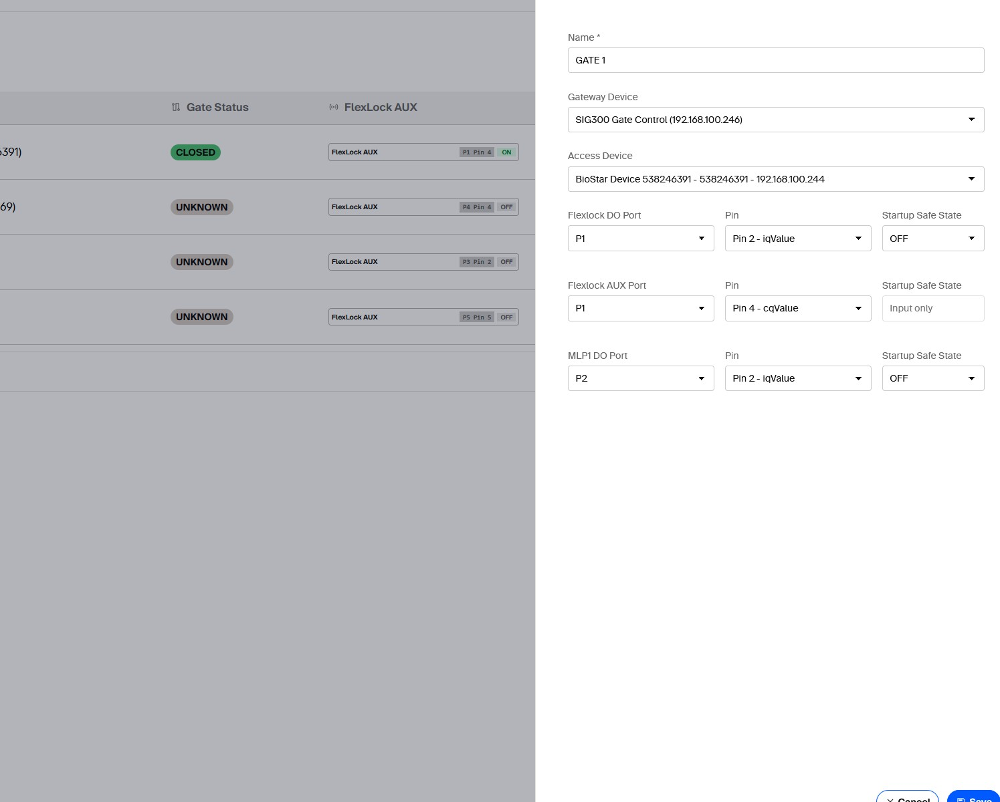
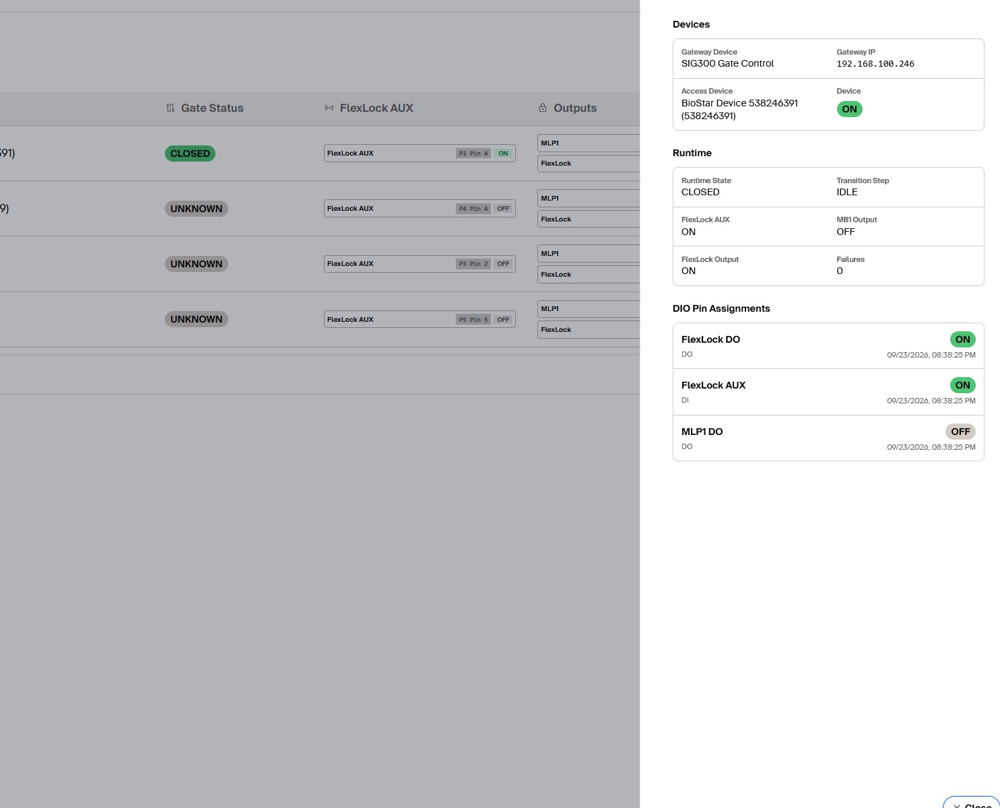
4. Camera Management
Add every Visionary-B Two / AI-Assist camera used for people count and fall detection. Configure the required camera fields first, then register the camera in AI LOTO Monitoring.
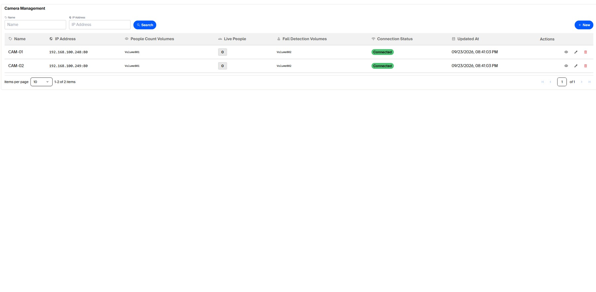
4.1 Prepare the Visionary-B Two camera
Before adding the camera in AI LOTO Monitoring, make sure the camera has a reachable, unique IP address and that its detection zones are configured in the Visionary WebUI. The camera IP must not duplicate the IPC, SIG300, access-device or another camera address.
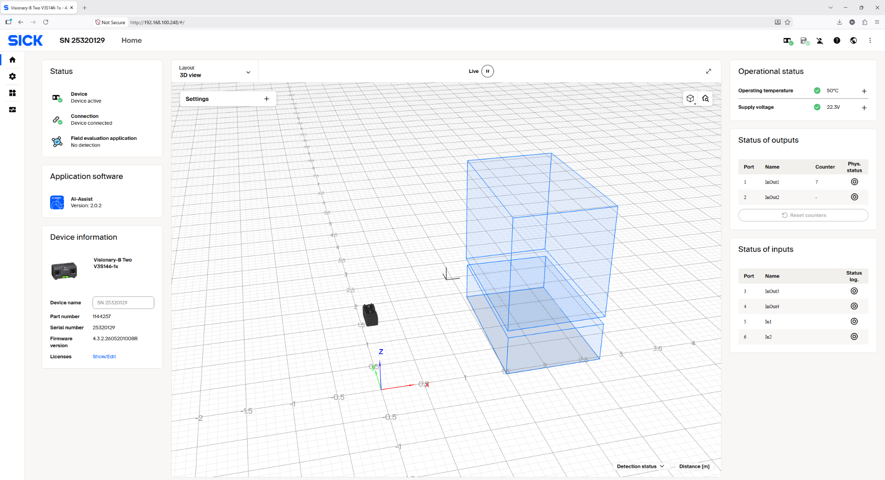
Step 1 — Tune person recognition
- Open the camera WebUI at http://<camera-ip>/.
- Go to Configuration → Object recognition.
-
Under Persons, fine-tune the following parameters
for stable and reliable detection:
- Recognition time — how long the object must satisfy the person criteria before it is accepted.
- Holding time — how long a detected person remains held after the detection condition disappears.
- Sensitivity — adjust only as needed to improve reliable person detection without causing unwanted detections.
- Use the live 3D view while commissioning and confirm standing and walking persons are detected smoothly in the intended area.
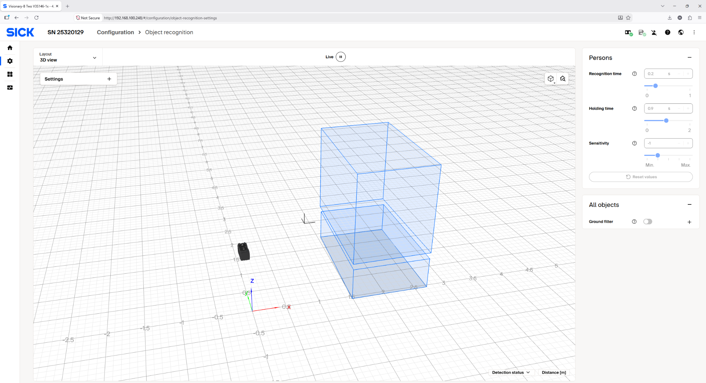
Step 2 — Create the People Detection Zone (Volume001 / Evaluation ID 1)
- Go to Application → Field evaluation.
- Create or open the field-evaluation group used for this camera.
- Create the first evaluation for the normal people-detection area.
- Set Detected objects = Persons.
- Use this first evaluation as the LOTO people-detection volume Volume001.
- Adjust the 3D field so it covers only the intended monitored area for this camera.
- Adjust Min. portion of a person in the field as required by commissioning.
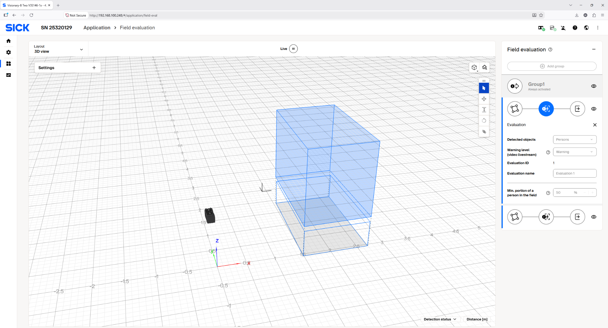
Step 3 — Create the People Falling Zone (Volume002 / Evaluation ID 2)
- In the same Application → Field evaluation group, add a second evaluation.
- Set Detected objects = Persons.
- Use this second evaluation as the LOTO fall-detection volume Volume002.
- Position and size the field close to floor level so a fallen person can infringe it while normal standing/walking activity does not normally activate it.
- Adjust Min. portion of a person in the field as required.
- Validate the field using controlled commissioning tests before releasing the system for normal operation.
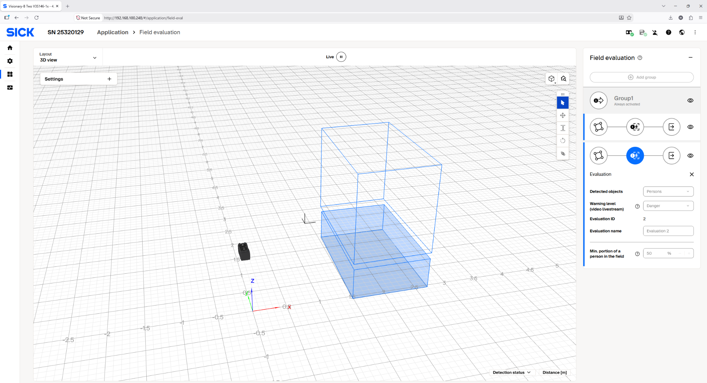
4.2 Register the camera in AI LOTO Monitoring
- Enter a clear camera Name.
- Enter the Camera IP and Port. The current camera port is 80.
- Enter the Human Count Endpoint: POST:/api/GetObjectList.
- Under People Count Volumes, enter Volume001.
- Under Fall Detection Volumes, enter Volume002 (People Falling Zone / Evaluation ID 2).
- Save and confirm Connection Status = Connected and that Live People changes when a person enters/leaves the configured Volume001 region.
- Perform a controlled fall-detection test and confirm the Monitoring Dashboard changes from NORMAL/DETECTING to FALL DETECTED according to the configured persistence time.
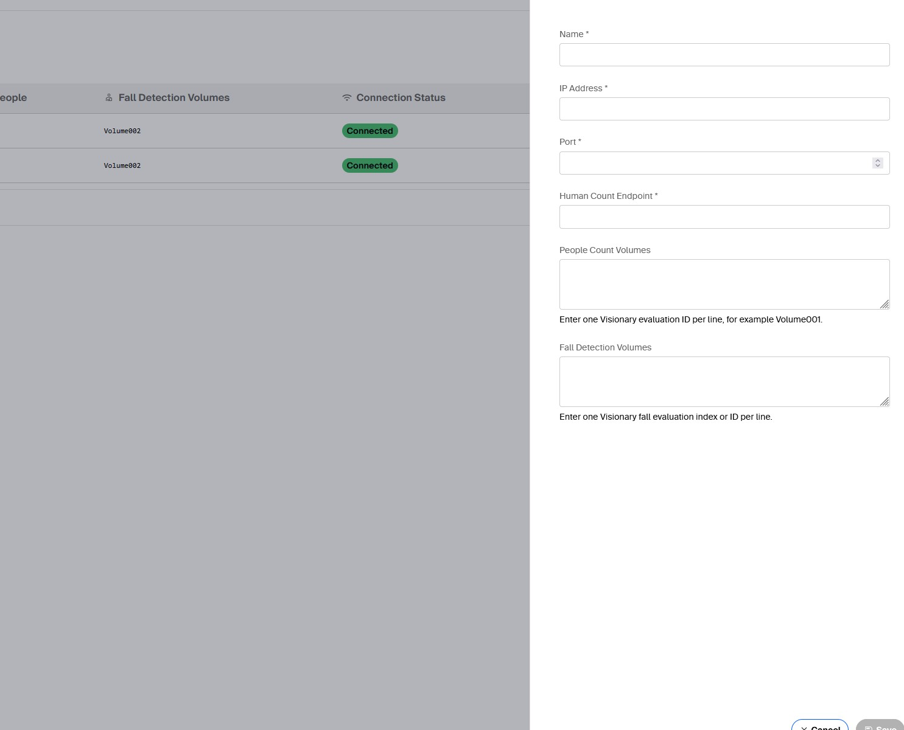
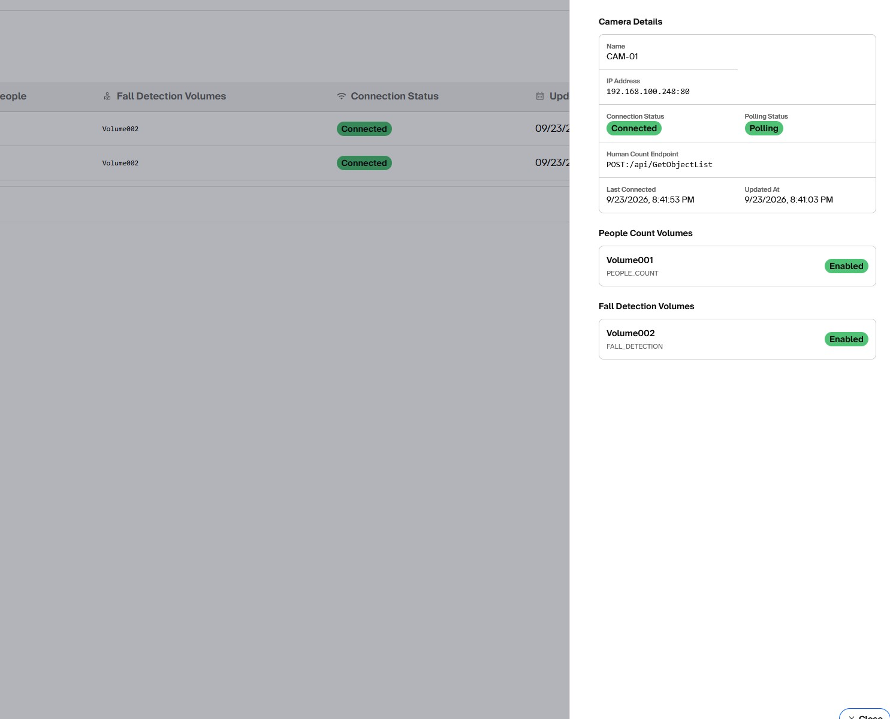
5. Shopfloor Layout
The shopfloor image is used only for visualization; it does not change hardware assignments.
- Choose a PNG, JPEG or WebP floor-plan image.
- Enter a Name.
- Select Theme Mode: Light, Dark or Both. Use Both when the same image is suitable for both themes.
- Select Set active after upload when appropriate, then Upload.
- Select a registered Gate and click the floor plan to place it.
- Drag the marker to fine-tune position. Use Left 90°, Right 90° or Reset to adjust marker rotation.
- Repeat until all required gates show Placed.
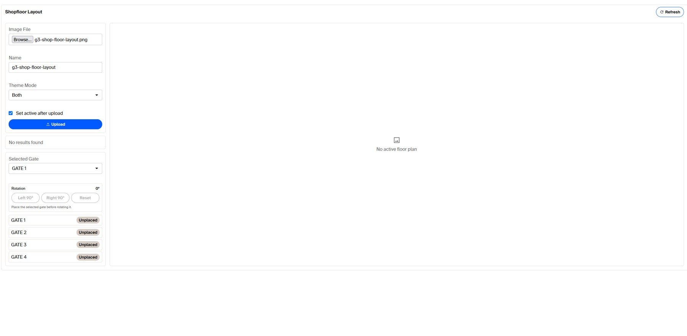
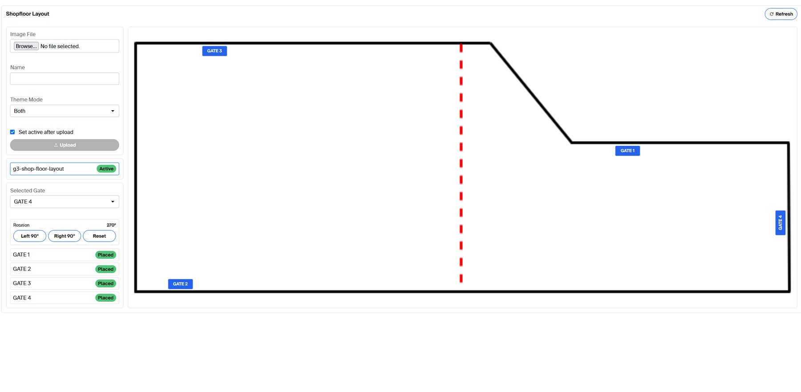
6. Final commissioning checks
- Each Visionary-B Two camera has the approved AI-Assist application installed and shown on its Home page; the documented example uses AI-Assist version 2.0.2.
- Every required gateway is Connected and initialized.
- Every required gate access device is Connected.
- Every gate has a valid access device and three I/O mappings.
- AUX state changes physically when the gate/FlexLock changes.
- Every camera is Connected and returns expected counts/evaluation states.
- An active floor plan is visible on Monitoring with all gates placed.
- Test one controlled IN and OUT scan at each gate, then test the approved cross-gate scenario.
- Verify Alarm outputs against the expected logical conditions.